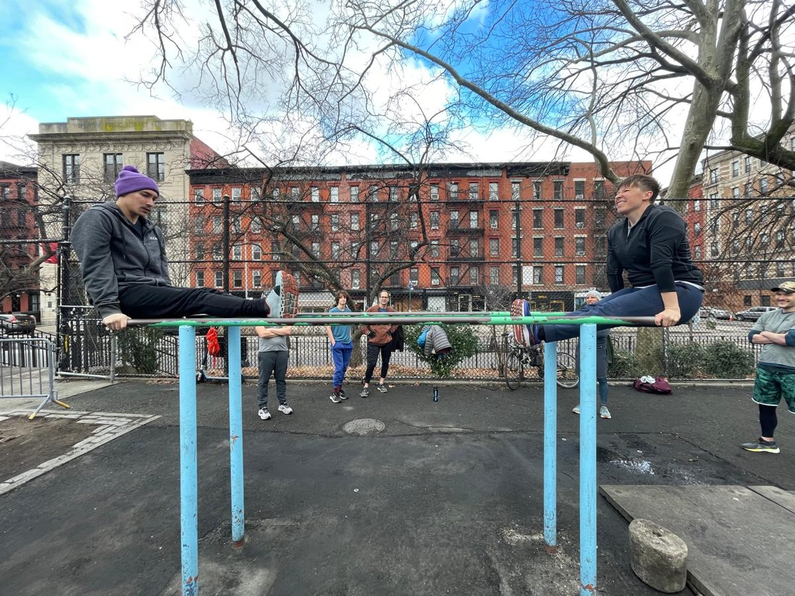

What Parks' own records say
NYC Parks says the Tompkins bars are in poor condition and must be torn down. So we read Parks' own records and they tell a very different story.
In short, the Tompkins bars may be the sturdiest in the city. They are close to 40 years old and stand in the busiest of the 41 Manhattan parks with adult fitness equipment. Yet in 61 park-wide inspections from May 2000 to August 2026 and 3,458 repair orders from January 2010 to October 2026, Parks never recorded serious damage to them. At most one repair concerns the bars, a weld in 2010, which Parks rated as low priority. Their only other problems, worn paint and a worn surface, went away when Parks did basic maintenance. Equipment elsewhere fares much worse. We checked the same kinds of records for 64 other parks with adult fitness areas. At 40 of them, including newly renovated ones, Parks found serious, chronic or premature problems: equipment that comes loose, turns wobbly or breaks down surprisingly early and surprisingly often.
Which parks, and what counts as serious, chronic or premature
The 64 parks. Every other Manhattan park where Parks’ inventory lists exercise equipment (40), and 24 in the other boroughs: 23 where Parks built or rebuilt a fitness area according to its own Capital Project Tracker, plus Macombs Dam Park, where new equipment was installed in 2020. With Tompkins, that is 65 parks, 41 of them in Manhattan.
Serious, chronic or premature problems. Each Parks repair order carries an assigned priority. We count a park if Parks sent crews to fix broken, loose or missing fitness equipment:
- serious: on at least one repair it rated high priority (37 parks), or
- chronic: on two or more routine repairs, rated low or medium priority (2 more parks), or
- premature: on a routine repair within three years of building or rebuilding the fitness area (1 more park, Ewen Park, 22 months after its new equipment).
No park is counted twice. We left out Betsy Head Park, whose one repair, a “melted section near yellow and gray panels,” may concern the surface rather than the equipment.
Parks keeps the receipts
Running New York City's parks is a tough job, and NYC Parks has systems in place to keep them in good shape. Two types of action by NYC Parks leave a detailed paper trail.
- Inspectors. Parks sends inspectors to visit its properties throughout the year. On a regular inspection, the inspector estimates how many people are in the area being inspected, and rates up to 17 features of the site, such as litter, benches, fences, paved surfaces, play equipment and safety surfaces, as acceptable or unacceptable. For each problem, the inspector writes down what it is, where it is, how much of the feature it affects, and whether it is a hazard. From February 1999 to August 2026, Parks made 153,765 inspections of parks, playgrounds and other sites across the city, about 6,400 a year in recent years, and logged 773,451 problems. From May 2017 on, Parks has also sent inspectors on shorter visits it calls sweeps, 2,429 of them, mostly in larger parks. A sweep rates only litter, glass, weeds and graffiti, and includes the visitor estimate.
- Repair crews. Parks keeps maintenance workers, masons, welders and other skilled crews who fix things when they break. Each repair starts as a work order, which says what is wrong, where, and how urgent the repair is, and is marked completed when the job is done. A work order can start with a staff member, an inspector's finding, or a public complaint to 311. Parks has published 2.2 million work orders from June 2009 to October 2026, about 100,000 a year in recent years.
The city then makes all of it available on NYC Open Data, where anyone can look.
Tompkins, heavily used and closely watched
Tompkins is one of the busiest parks in the city. Inspectors counted an average of 144 people in the park per inspection. Among the 41 Manhattan parks with adult fitness equipment, that makes Tompkins the busiest: about 40% more people than the next, Columbus Park, and about seven times as many as the median park.
See the visitor estimates
The busiest of the 41 Manhattan parks with adult fitness equipment
| Park | Average people per inspection |
|---|---|
| Tompkins Square Park, East Village | 144 |
| Columbus Park, Chinatown | 104 |
| Seward Park, Lower East Side | 95 |
| St. Catherine's Park, Upper East Side | 75 |
| Thomas Jefferson Park, East Harlem | 69 |
| Inwood Hill Park, Inwood | 68 |
| Median of the 41 parks | 20 |
Most parks, like Tompkins, Columbus and Seward, are inspected as a single zone, so the figure covers the whole park. A few very large parks, such as Central Park, Riverside and Inwood Hill, are split into several zones. For those, we use only the zone or zones where Parks’ inventory lists exercise equipment, since a whole-park figure would mostly count people far from it. Of the 41 parks, 30 are single zones, and 11 are large parks measured only in the zones with exercise equipment. The figure for each park is the average of inspectors’ visitor estimates over all inspections of the relevant zones from February 2014 to August 2026. Parks’ data dictionary describes the figure as the “Visitor estimate at site during time of inspection,” so it counts everyone in the zone, not only the people at the equipment.
Tompkins is also closely watched. Parks’ records include 61 park-wide inspections of Tompkins, each rating the play equipment, the safety surface and about ten other features. The records also include 3,458 work orders, about 200 a year. If something were wrong with the bars, Parks would know, and it would be in the records.
We are looking in the right place. The bars sit between the basketball and handball courts, and Parks' records follow that corner of the park closely. In 2015, crews replaced missing bolts on the half court behind the handball court. In 2018, a forestry crew removed a “dead limb over BBCT/work out bars”. In 2019, an inspector wrote up a damaged tension rod at the basketball court near East 10th Street. In 2020, crews took down the hoops for COVID, and in 2021 they reinstalled the backboards and rims. When something near the bars breaks or needs work, it shows up in the records.
The bars: rock solid, by Parks' own account
For the same 64 parks, we read every inspector finding and repair order that mentions fitness equipment. At 49 of them, Parks recorded damaged, broken, loose or missing fitness equipment. They include the 40 parks with serious, chronic or premature problems, plus 5 parks with one routine repair, and 4 with one inspector finding and no repair.
The other 15 parks have no inspector findings or work orders about damaged, broken, loose or missing fitness equipment. Twelve of them got their fitness equipment between 2016 and 2026, and so far it is holding up. For the other three, the records are incomplete: Bennett Park’s equipment may no longer be there, Riverside Park South is cared for by a private conservancy whose repairs may not show up in Parks’ records, and Alexander Hamilton Playground reportedly got new equipment in 2025. Tompkins, with bars from the late 1980s, is by far the oldest and the busiest: 144 people per inspection, against 28 or fewer at the twelve.
See the parks with no equipment problems on record
| Park | Fitness area built | Average people per inspection |
|---|---|---|
| Tompkins Square Park | Late 1980s | 144 |
| Shoelace Park, Bronx River Parkway, Bronx | Aug 2026 | 6 |
| Percy E. Sutton Playground | Dec 2025 | 1 |
| Seton Park, Bronx | Dec 2024 | 11 |
| Monsignor Kett Playground | Jul 2023 | 14 |
| Pier 42 | Nov 2022 | 28 |
| Abraham Lincoln Playground | Oct 2021 | 5 |
| Glen Oaks Oval, Queens | Apr 2021 | 8 |
| Cambria Playground, Queens | Mar 2020 | 7 |
| Montbellier Park, Queens | Mar 2020 | 20 |
| Riverside Park, at Neufeld Playground | Oct 2019 | 11 |
| Booker T. Washington Playground | Sep 2018 | 20 |
| Howard Von Dohlen Playground, Queens | Apr 2016 | 9 |
“Average people per inspection” is calculated as in the Manhattan table above, from February 2014 to August 2026, in the zone or zones where Parks lists exercise equipment. Riverside Park has three such zones, which we combine. For Shoelace Park, Parks does not list the zone, so we use all of Bronx River Parkway. Dates link to the Capital Project Tracker, a Parks press release or page, or local news.
By Parks’ own ratings, the Tompkins bars may be the sturdiest in the city. Of the 61 park-wide inspections, inspectors rated the play equipment acceptable 57 times. None of the four exceptions was about the bars. In 2010 and 2011, it was the handball court’s paint, “chipping paint impedes use.” In 2019 and 2026, it was exposed rebar at chess tables.
inspection, no problem with the bars play equipment failed, but not the bars repair that may concern the bars
Parks’ repair orders for Tompkins show one fix that may concern the bars. In July 2010, a blacksmith was sent to “weld top bar on a fram bolt keeps breaking.” Parks assigned it low priority, and the job was done within a week. That is at most one small fix in 16 years, on equipment close to 40 years old.
See the repair orders we checked
Parks files work orders by zone, not by piece of equipment, and the 2010 order is filed under a Tompkins zone that also holds children's play equipment. It does not name the fitness equipment, so it may concern the playground instead. We count it because it could be the bars.
Three more orders in the same zones mention a bar or a bolt. They most likely concern children's play equipment, and we do not count them.
- Oct 2016: “Replace missing bar”. Written the same day as other playground repairs, including tire swings and worn playground edges.
- Nov 2019: “replace missing bolt on climber”. Written the same day as repairs to a slide and a xylophone.
- Jun 2026: “The entire bar is loose and unstable”. Written the same day, in the same zone, as “bar coming from out of the ground in the playground located 7th St Ave B”.
Other parks are a different story. Below are selected records, up to five per park, for illustrative purposes.
Columbus Park, Manhattan, built 2018
- Aug 2019: “Reattach broken arm of exercise equipment.”
- Nov 2019: “missing hand crank on workout equipment”
- Jul 2023: “exercise hand rings need new bolts”
- Jul 2023: “exercise bars most of them need to be re welded”
Chelsea Park, Manhattan, install date unknown
- Aug 2013: “Repair/Ck Loose pull up bars on Adult PE”
- Oct 2016: “5 loose boards on exercise eq”
- Aug 2017: “Tighten parallel bar on work out equipment.”
- Dec 2021: “Rotted, splintered or jagged, slat on incline board”
- Dec 2021: “Repair 1 splintered VR Slat Incline Exercise Board”
Bloomingdale Playground, Manhattan, built 2019
- May 2022: “Bolt missing at adult exercise equipment at Bloomingdale.”
- Oct 2022: “Please repair exercise equipment (Looses)”
- Mar 2024: “Missing latch at exercise station by gate.”
- May 2024: “Exercise equipment, landscape backpress/chest- bolt broken needs to be replaced”
J. Hood Wright Park, Manhattan, built 2018
- Jan 2024: “removed, hand ring”
- Jun 2024: “Missing metal ring strap In fitness area”
- Sep 2024: “Replace Missing gym ring in fitness area in jhood”
- Oct 2024: “handring missing”
- Mar 2025: “RING MISSING ON ACROBATICS APPARATUS IN ADULT EXERCISE AREA”
Fort Tryon Park, Manhattan, built 2019
- Oct 2021: “Repair 1 spinner on Adult Exercise Equipment”
- Sep 2025: “Step pod circle for pull up bars in work out equipment”
- Oct 2025: “Fall PEI 2025 Stepping pod is loose in the work out area.”
- Oct 2025: “Fall PEI 2025. Standing sit up bar screws are loose at the exercise equipment”
- Dec 2025: “Exercise padding on work out equipment damaged. Wear and tear”
Inwood Hill Park, Manhattan, built 2018
- Nov 2024: “Tighten up loose pull up bar”
- Dec 2024: “Secure exercise bar. Place 2 missing bolts”
- Jun 2026: “Tighten up loose bar adult exercise equipment”
Jaime Campiz Playground, Brooklyn, built 2018
- Oct 2021: “station removed, push-up bar”
- Mar 2022: “Sharp protruding, edges due to damaged/missing lower horizontal bar on ex eqpt near BBCT. Close to Hope St and Marcy Ave.”
- Jul 2026: “Repair 1 PE push up bar ratting/loose Exercise Area”
Sunset Park, Brooklyn, built 2018
- Sep 2020: “Replace missing piece exercise equipment see attached”
- Jun 2021: “deliver exercise equipment handle to Rep”
- Mar 2024: “Tighten bolts on exercise equipment there is no tension/resistance”
- Jul 2026: “damaged, 1 of 2 Tai Chi wheels missing”
- Aug 2026: “Repair broken exercise equipment -Play equipt.”
Linden Park, Brooklyn, built 2016
- Jul 2023: “replace cover to pull up station”
- Mar 2024: “Sharp protruding, metal on damaged squat press exercise equipment”
- Aug 2024: “damaged, /missing bar at the squat Press.”
Jacob Joffe Fields, Brooklyn, built 2019
- Sep 2019: “Broken foot rest on exercise equipment ( foot rest is at canarsie park”
- Feb 2020: “replace missing pedal on exercise equipment”
- Aug 2021: “Loose/missing apparatus creating fall hazard, free swinging foot rest and broken equipment partially cautioned off”
- Aug 2021: “damaged, loose pull-up bars (patron complaints)”
- Jun 2022: “Repair broken exercise bar at location- see notes”
Flushing Meadows Corona Park, Mauro fitness area, Queens, built 2019
- Oct 2021: “Kopan1st section of workout equipment- the sitting bench has a missing cap”
- Dec 2021: “Shops/Workout Equipment(Captain's Chair) left armrest is loose”
- Dec 2021: “Shops/Workout equipment bars/Two clamp bolt covers are loose”
- Mar 2023: “Loose cap on bar in fitness section causing pinch hazard”
- Jun 2023: “Shops/Fix/replace adults work out bench loose.”
Bronx Park, Bronx, built 2019
- Sep 2020: “Exercise equipment is broken”
- Sep 2020: “Exercise equipment (BIKE) pedal is broken - See Brian”
- Oct 2020: “Rotted, splintered or jagged, wood on exercise stumps in BBCT area”
- Mar 2021: “Rpr/Rpl all broken exercise equipment”
- Oct 2021: “Exercise equipment. Broken handle. Zone 1/ Brady Playground”
Colucci Playground, Bronx, built 2020
- Sep 2022: “Loose/missing apparatus creating fall hazard, on EE”
- Sep 2022: “Reattach loose cables on fitness equipment DIA #148577”
- Jun 2023: “Work out equipment is broken”
- Sep 2023: “Exercise equipment has damaged handle, see pics”
- Oct 2023: “Pls replace rotted wood slats on sit up station - See Brian”
Van Cortlandt Park, Bronx, built 2024
- Sep 2025: “Remove 3inch protruding metal. adj push up exercise equipment. GD”
- Sep 2025: “exercise pushup bar, support leg spilt in several area. Cloak”
- Oct 2025: “3" metal protruding from the ground. remove. adj to arm pull up”
- Oct 2025: “Missing cap on exercise machine. basketball court area. GD”
Pelham Bay Park, Bronx, built 2017
- Sep 2019: “Peifall19. Mt exercise leg press bar. Broken off. aileen rayn exercise sta.”
- Sep 2019: “Peifall19. 1. Mt leg pull up bar. Broken off exerciser. Eileen rayn rec”
- Oct 2019: “PEI 2019-Replace broken leg press unit-broken piece is in the HQ office”
- Nov 2020: “Repair. 1. Leg press Exercise sta. Broken off leg bar. Eileen ryan Exercise sta”
- Mar 2021: “PEI SPRING 21 - Broken leg press machine”
New is not better. Of 35 fitness areas Parks built or rebuilt from 2014 to mid 2025, 23 have already needed repairs, and half needed their first repair within about four years.
The paint: it wore off, as paint does
The only damage Parks inspectors ever recorded on the Tompkins bars is worn paint. In January 2019, an inspector found “missing paint (worn from use)” on 60% of the equipment. In September 2019, crews were sent to “scrape, prime and paint adult fitness equipment.” The next eight inspections, through June 2022, found no paint problem at all.
Then the paint wore off again. In December 2022, an inspector noted chipping paint on 5% of the equipment. By August 2026, missing paint on 30%. Parks has not repainted the bars since September 2019. Regulars don't mind. If Parks wants to paint the area, no one will object.
paint problem found no paint problem
Sep 2019
See every paint finding on the bars
| Date | What the inspector wrote | Share of equipment |
|---|---|---|
| Jun 2015 | “chipping paint | on exercise equipment.” | not given |
| Mar 2017 | “requires paint | on pe at exercise station” | 10% |
| Aug 2017 | “chipping paint | at park.” | 40% |
| Jan 2019 | “missing paint (worn from use) | at pk.” | 60% |
| Jun 2019 | “missing paint (worn from use)” | not given |
| Sep 2019 | Repainted (work order). No paint finding on the next eight visits. | |
| Dec 2022 | “chipping paint (structural) | at park near HBCT.” | 5% |
| Mar 2024 | “chipping paint (structural) | in exercise area” | 10% |
| Jul 2024 | “missing paint (worn from use) | within exercise station” | 15% |
| Jan 2025 | “chipping paint (structural) | on exercise equipment” | 15% |
| May 2025 | “chipping paint (structural) | adj HBCT & BBCT” | 15% |
| Feb 2026 | “chipping paint (structural) | at fitness area btw HBCT and BBCT” | 25% |
| Aug 2026 | “missing paint (worn from use) | at fitness area adj HBCT” | 30% |
“Share of equipment” is the inspector's estimate of how much of the equipment is affected, which Parks' data dictionary calls the extent. “Chipping paint (structural)” is one of Parks' standard paint categories. Parks does not define it, and we read it as paint flaking off the structure, not damage to the structure itself. HBCT is the handball court and BBCT the basketball court, which sit on either side of the bars. “Pk.” is park, and “pe” is play equipment.
The surface: bad, then fixed
The rubber safety surface under the bars was a real problem. Inspectors first rated it in 2003. Of the 42 inspections that rated it before 2024, 31 flagged it, 16 as failing and 15 as worn. Many of those were hazards, such as “> 1 sq ft of exposed PS in critical area of SS | at exercise equipment adj HBCT” in 2015. In plain English, the rubber surface under the bars had worn through to the pavement below. Parks sent repair crews nine times from June 2010 to March 2022, and the surface kept failing. The last hazard on record was in October 2023.
Then Parks fixed it. The tenth repair, a work order to “Repair 4 areas SS missing exercise area,” was completed in February 2024. All 7 inspections since then rated the surface acceptable, and no surface work order has been needed. When Parks maintains the area, the problems go away.
failed its rating wear noted, passed no problem not rated repair order
Feb 2024
See every completed surface work order at the bars, June 2010 to February 2024
| Date | What the work order says |
|---|---|
| Jun 2010 | “repair worn areas of safety surface at exercise areas” |
| Jul 2015 | “repair eroded safety surface-concrete exposed at exercise equipt” |
| Sep 2016 | “Less than 1 sq ft of exposed PS in critical area at exercise equipment” |
| Mar 2017 | “Safety Surface uplifted adj exercise station adj E 10 St and Ave B” |
| Aug 2018 | “Repair safety surface of exercise court damaged in multiple locations.” |
| Jan 2019 | “S.S,> 1 sq ft of exposed PS in critical area of SS, (Poured-in-Place) at ex eqp” |
| Oct 2019 | “Safety surface, bare , exercise equipment area” |
| Oct 2021 | “Replace damaged safety surface exercise area , received DIA # 133758” |
| Mar 2022 | “Deteriorate safety surface exercise area” |
| Dec 2023 | Repaired, “Repair 4 areas SS missing exercise area”, completed Feb 2024 |
| Since | No surface work orders. Seven inspector ratings, all acceptable. |
Parks marks every one of these work orders completed. The records say “repair” or “replace,” but not how much of the surface was redone.
Accessibility: Parks pays attention, and never flagged the bars
Parks takes accessibility seriously, and its records show it. Across the same 65 parks, the inspector findings and repair orders contain 2,145 records that use the words ADA, accessible, handicap or wheelchair to refer to people with disabilities. They are specific.
| What the records are about | Records |
|---|---|
| ADA swings and other children's play equipment | 729 |
| Restrooms and locker rooms | 649 |
| Access routes, ramps and entrances | 228 |
| Pool access | 110 |
| Parking | 90 |
| Signs and drinking fountains | 59 |
| Other | 280 |
| An adult fitness area being inaccessible | 0 |
Parks notices small things, from a missing ADA swing at Chelsea Park to a damaged grate at the top of an ADA ramp at Macombs Dam Park. At Tompkins, inspectors counted the ADA swing 45 times from 2014 to 2026, and in 2026 staff fixed a broken stall door in the ADA restroom and logged a rusted screw on the ADA swing. A rusted screw on a swing makes it into the record. If the fitness area were inaccessible, it would be there too. In all those records, it isn't. In fact, when inspectors wrote up the rubber surface under the bars, in 2017 and 2019, they described it as an “accessible area.”
Parks installs signs so users know which areas are accessible. At Tompkins, inspectors counted accessible signs on 20 of 24 park-wide inspections from March 2008 to January 2019, one of them “adj MPPA,” the area that is now the skate park. The sign has since been removed, and no inspector has recorded it since 2019.
What the records show
The Tompkins bars may well be the best in the city. They are close to 40 years old, they stand in the busiest of the 41 Manhattan parks with adult fitness equipment, and Parks' own records show they have held up better than the new equipment Parks has been installing elsewhere. Their only problems, worn paint and a worn surface, went away when Parks did the maintenance. Its inspectors even call the ground at the bars an “accessible area.” So why close them for two years or more, demolish everything, and replace them with equipment that, if the record elsewhere is any guide, will likely start breaking down within a few years?

How we did it
- Sources. All data come from NYC Parks datasets on NYC Open Data, downloaded in November 2026: work orders, inspections, feature ratings, conditions and hazards, element counts, and the Capital Project Tracker. Each quote above links to the original record.
- Periods. Inspection records run from February 1999 to August 2026, and repair records from June 2009 to October 2026. Inspectors began estimating visitors in February 2014, so visitor averages cover February 2014 to August 2026. Everything else on this page uses the full record. For new and rebuilt fitness areas, we stop at June 2025, so that each has at least a year of records.
- Build dates. To know when each fitness area was built or rebuilt, we used Parks' Capital Project Tracker, which lists 2,311 construction projects with their dates. We also searched local news and Parks' own announcements, to confirm those dates and to find installations the tracker does not list.
- Finding the fitness areas. Parks keeps an inventory of the fixed features at each property. We included every Manhattan park that the inventory lists with “Exercise Equipment.” We added every park in the other boroughs where the Capital Project Tracker shows a completed outdoor project with fitness, exercise, workout or calisthenics in its title, and a few parks we had already chosen for comparison, such as Macombs Dam Park. Then we checked each park against its own records. All but one had at least one inspection or work order that mentions its exercise equipment. The exception, Joan of Arc Park, turned out to have no fitness area, because its project installed the equipment in nearby Riverside Park, and we removed it. That left 65 parks, Tompkins included, 41 of them in Manhattan.
- Records. We kept every work order and inspector finding at these parks that mentions fitness equipment or accessibility, 4,935 records, and sorted each one: the equipment itself, paint, the surface, a nearby feature, or accessibility. Of the 4,935, 527 describe damaged fitness equipment, 2,145 concern accessibility, and the rest concern paint, surfaces and nearby features. Records at Tompkins and six other parks were read one by one. The rest were sorted by keyword. A random check of 40 of them found 34 sorted correctly; the six errors were accessibility records in the wrong subcategory or records unrelated to fitness areas, none of them in the equipment count. We then removed by hand the records that were filed as equipment but concern something else nearby, such as benches, signs or the surface. The timeline charts show regular inspections only, since sweeps do not rate equipment.
- Reading the shorthand. Parks staff write in their own shorthand, such as SS for safety surface, PS for paved surface and HBCT for handball court. We have done our best to translate it into plain English, using Parks' published data dictionary where it gives a definition. Where we explain a record, we quote the original text too, and link to it, so readers can judge for themselves.